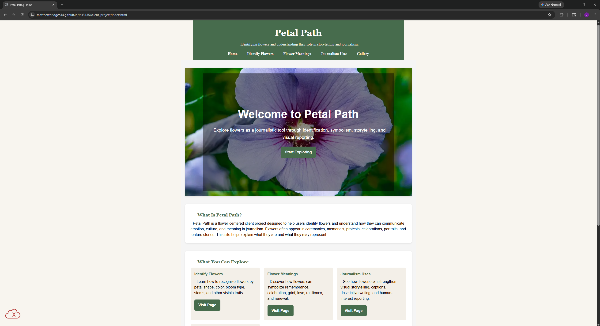

Peer Evaluation 2
Evaluated: Bridges, Matthew

Website Checklist Evaluation
-
File Naming: (No spaces/uppercase?)
- You definitely meet this. Your files are all lowercase, well organized, and follow normal naming conventions. I will say that your stylesheet and scripts aren't in the same folder as the rest of your project but I don't think this matters
-
Contrast & Design: (Legibility and CRAP principles?)
- You blew this out of the water. Your sites design is great, absolutely follows CRAP, and looks incredibly professional and impressive.
-
Structure: (Header, Main, Footer present?)
- Your site structure is great. You have a header, main, and footer present and all are well filled out. You also follow the smaller requirements made by the assignment as well. Good job
-
Validations: (HTML/CSS links present and working?)
- There are some issues with validation. You have quite a few warnings (though I wouldn't really worry about them) and 2 errors. I'm not exactly sure what's causing those errors (accumulus isn't saying) but they should be fixed
-
Client Project Part 2 Requirements: (Part 2 turn-in
requirements)
- You've gone far beyond the requirements for part 2 of this project and realistically exceed them. Honestly, you seem to have fully flushed out every single page for this project and are basically done with it.
-
Client Project Part 3 Requirements: (Part 3
checklist)
- You've met every single smaller requirement mentioned in the checklist.
-
Constructive Feedback: (Stop, Start, Continue)
- Stop: I honestly can't give any feedback for this. I don't think there's anything in your site that's intrusive for the user, annoying, or should be changed
- Start: Once again, I can't really give much feedback for this. For what's covered in this topic, you seem to be handling basically all of it. Only thing I could recommend is maybe providing sources, outside resources, or places you'd recommend a visitor could buy flowers or start looking for them
- Continue: Including plenty of ways for the user to navigate throughout your site and lots of information being included